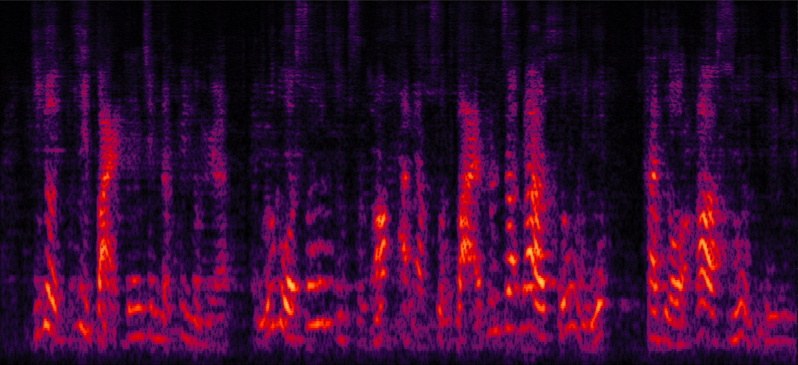
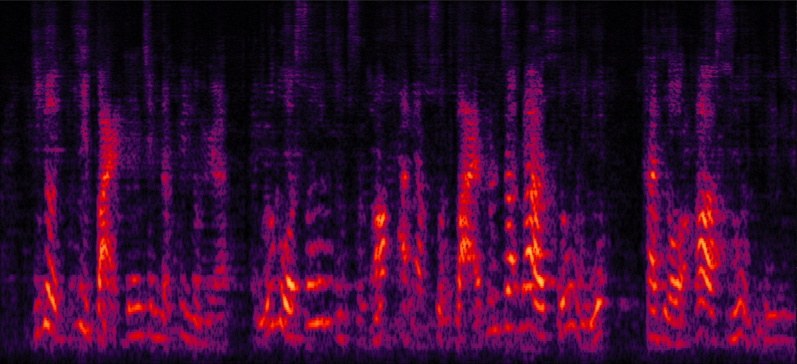
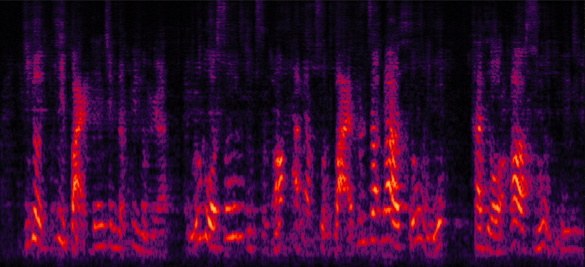
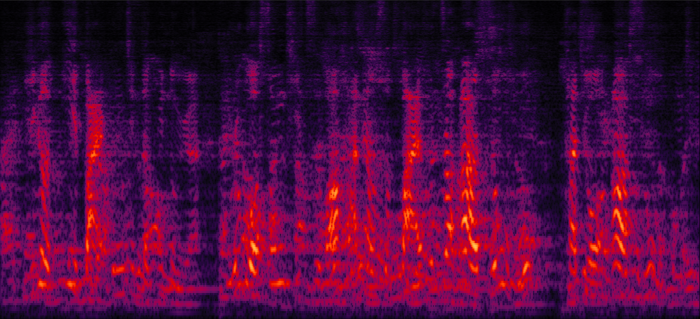

Zhuohuang Zhang (zhuozhan@iu.edu), Yong Xu, Meng Yu, Shi-xiong Zhang, Lianwu Chen, Donald S. Williamson, Dong Yu
Purely neural network based speech separation systems often cause nonlinear distortion on the separated speech, which is harmful for many automatic speech recognition (ASR) systems [1]. The minimum variance distortionless response (MVDR) beamformer can be used to minimize the distortion, yet conventional MVDR approaches still result in high level of residual noise [2,3]. In this study, we propose a novel all deep learning MVDR (denoted as ADL-MVDR) framework, where the matrix inverse and eigenvalue decomposition are replaced by two RNNs. Our model can greatly remove the residual noise while ensuring the distortionless of the target speech. Our system outperforms prior arts in many objective evaluation metrics as well as the ASR accuracy.
A Mandarin audio-visual dataset [4,5] is adopted for this study.
Systems evaluated:
1. NN with cRM: A Conv-TasNet variant [4,5] with complex ratio mask (denoted as cRM)
2. NN with cRF: A Conv-TasNet variant [4,5] with 3X3 size complex ratio filtering (denoted as cRF, please refer to the paper for details)
3. MVDR with cRM: An MVDR system with complex ratio mask [3]
4. MVDR with cRF: An MVDR system with 3X3 cRF
5. Multi-tap MVDR with cRM: A multi-tap MVDR system with complex ratio mask [3]
6. Multi-tap MVDR with cRM: A multi-tap MVDR system with 3X3 cRF
7. Proposed ADL-MVDR with cRF: Our proposed ADL-MVDR system with 3X3 cRF
Wearing a headphone is strongly recommended.
Purely NN systems can greatly remove the residual noise, but cause nonlinear distortion (e.g., blackhole on spectrogram).
Conventional MVDR systems can ensure the distortionless of the target speech, while result in high level of residual noise.
Our proposed ADL-MVDR systems can ensure the distortionless of the target speech while also eliminating the residual noise.
Demo 1: Simulated 1-speaker noisy mixture for target speech separation [Sorry that all the demos are recorded in Mandarin Chinese.]
| Mix (1 speaker + non-stationary additive noise) | Reverberant clean (reference) | NN with cRM | NN with cRF |
| MVDR with cRM | MVDR with cRF | Multi-tap MVDR with cRM (2-tap: [t-1,t]) | Multi-tap MVDR with cRF (2-tap: [t-1,t]) |
| Proposed ADL-MVDR with cRF |
Demo2: Simulated 2-speaker noisy mixture for target speech separation separation
| Mix (2 speakers + non-stationary additive noise) | Reverberant clean (reference) | NN with cRM | NN with cRF |
| MVDR with cRM | MVDR with cRF | Multi-tap MVDR with cRM (2-tap: [t-1,t]) | Multi-tap MVDR with cRF (2-tap: [t-1,t]) |
| Proposed ADL-MVDR with cRF |
Demo 3: Simulated 3-speaker noisy mixture for target speech separation (waveforms aligned with the spectrograms shown in Fig. 2 of the paper)

| Mix (3 speakers + non-stationary additive noise) | Reverberant clean (reference) | NN with cRM | NN with cRF |

| MVDR with cRM | MVDR with cRF | Multi-tap MVDR with cRM (2-tap: [t-1,t]) | Multi-tap MVDR with cRF (2-tap: [t-1,t]) |
| Proposed ADL-MVDR with cRF |
Demo 4: Performance between purely NNs and MF ADL-MVDR
| Mix (3 speakers + non-stationary additive noise) | Reverberant clean (reference) | NN with cRM | NN with cRF |
| MVDR with cRM | MVDR with cRF | Multi-tap MVDR with cRM (2-tap: [t-1,t]) | Multi-tap MVDR with cRF (2-tap: [t-1,t]) |
| Proposed ADL-MVDR with cRF |
Real-world scenario: far-field recording and testing:

Real-world recording hardware device: 15-element non-uniform linear microphone array and 180 degree wide-angle camera
For the real-world videos, the 180-degree wide-angle camera is calibrated and synchronized with the 15-channel mic array. We estimate the rough DOA of the target speaker according to the location of the target speaker in the whole camera view [4]. Face detection is applied to track the target speaker's DOA.
Demo 5: Real-world far-field recording and testing 1:
| Real-world scenario: far-field two-speaker mixture recorded by the camera and microphone array | Real-world scenario: separated male voice by our previously reported multi-tap MVDR (3-tap) method [3] (high level of residual noise) | Real-world scenario: separated male voice by the proposed ADL-MVDR method (face detected in the red rectangle, used for DOA estimation) |
Demo 6: Real-world far-field recording and testing 2:
| Real-world scenario: far-field two-speaker mixture recorded by the camera and microphone array | Real-world scenario: separated female voice by our previously reported multi-tap MVDR (3-tap) method [3] (high level of residual noise) | Real-world scenario: separated female voice by the proposed ADL-MVDR method (face detected in the red rectangle, used for DOA estimation). |
Reference:
[1] Du, Jun, et al. "Robust speech recognition with speech enhanced deep neural networks." Interspeech2014
[2] Xiao, Xiong, et al. "On time-frequency mask estimation for MVDR beamforming with application in robust speech recognition." ICASSP2017
[3] Xu, Yong, et al. "Neural Spatio-Temporal Beamformer for Target Speech Separation." accepted to Interspeech2020.
[4] Tan, Ke, et al. "Audio-visual speech separation and dereverberation with a two-stage multimodal network." IEEE Journal of Selected Topics in Signal Processing (2020).
[5] Luo, Yi, and Nima Mesgarani. "Conv-tasnet: Surpassing ideal time–frequency magnitude masking for speech separation." IEEE/ACM transactions on audio, speech, and language processing 27.8 (2019): 1256-1266.